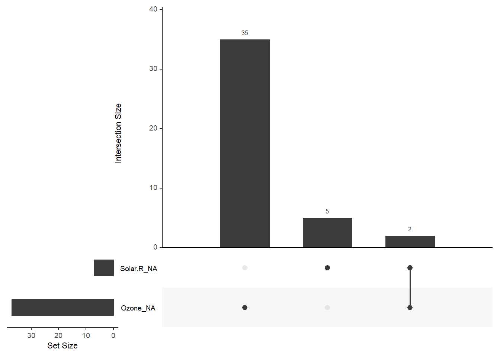
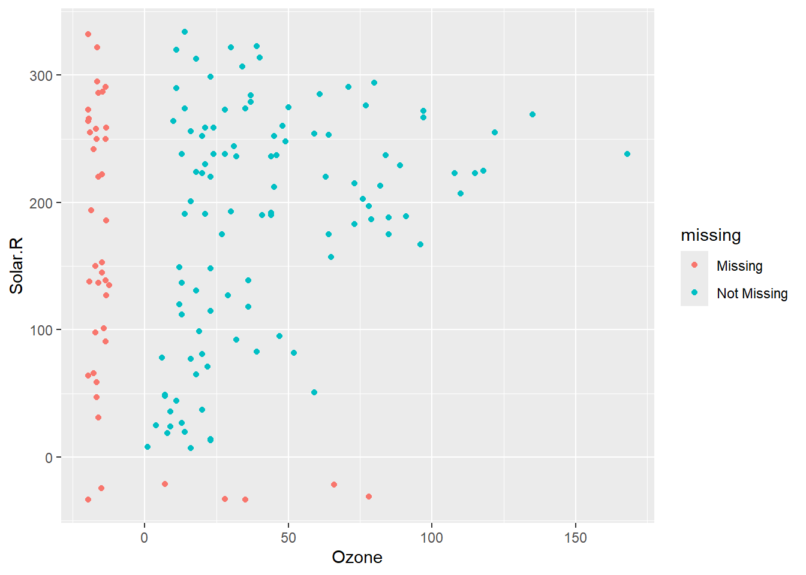
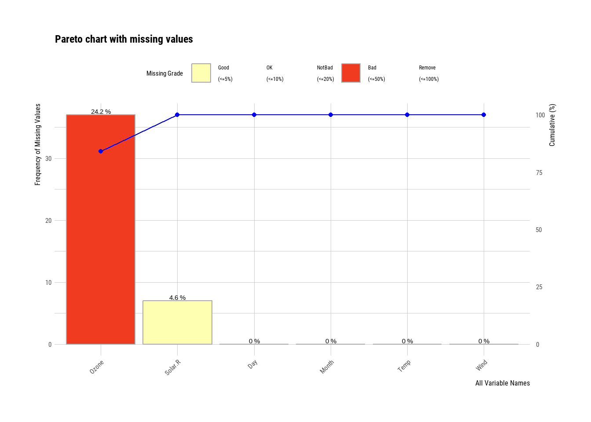
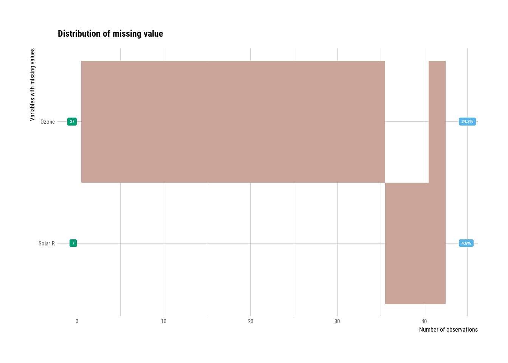
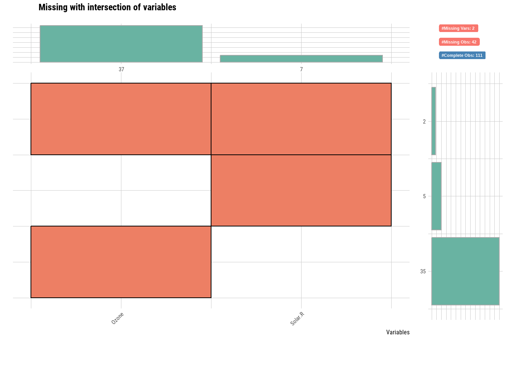
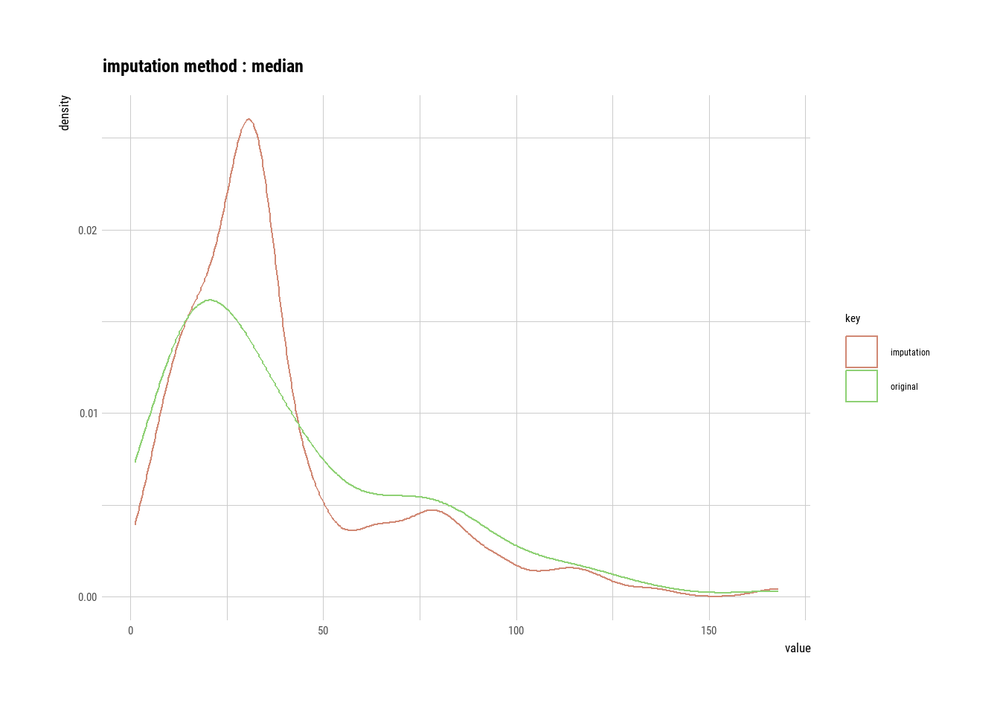
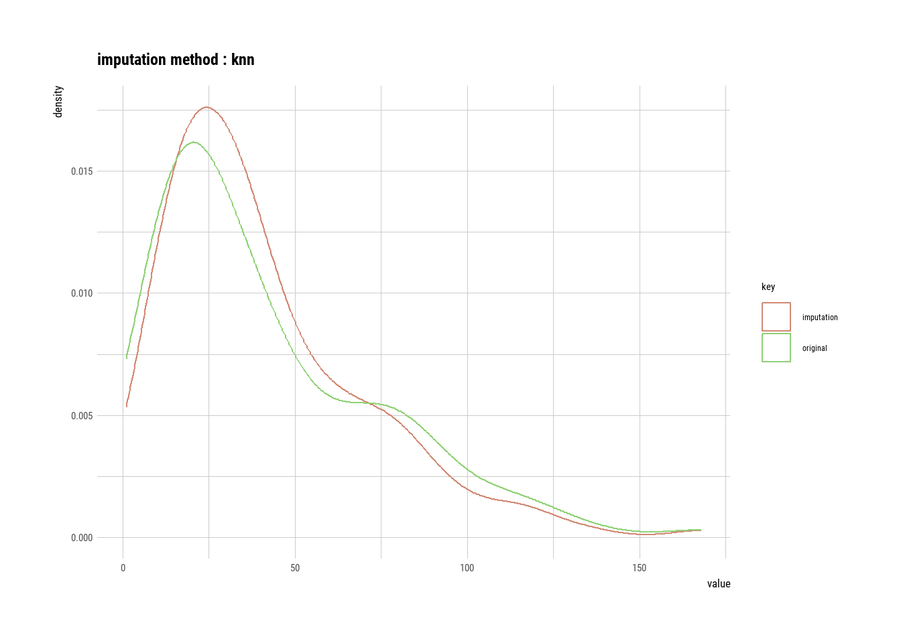
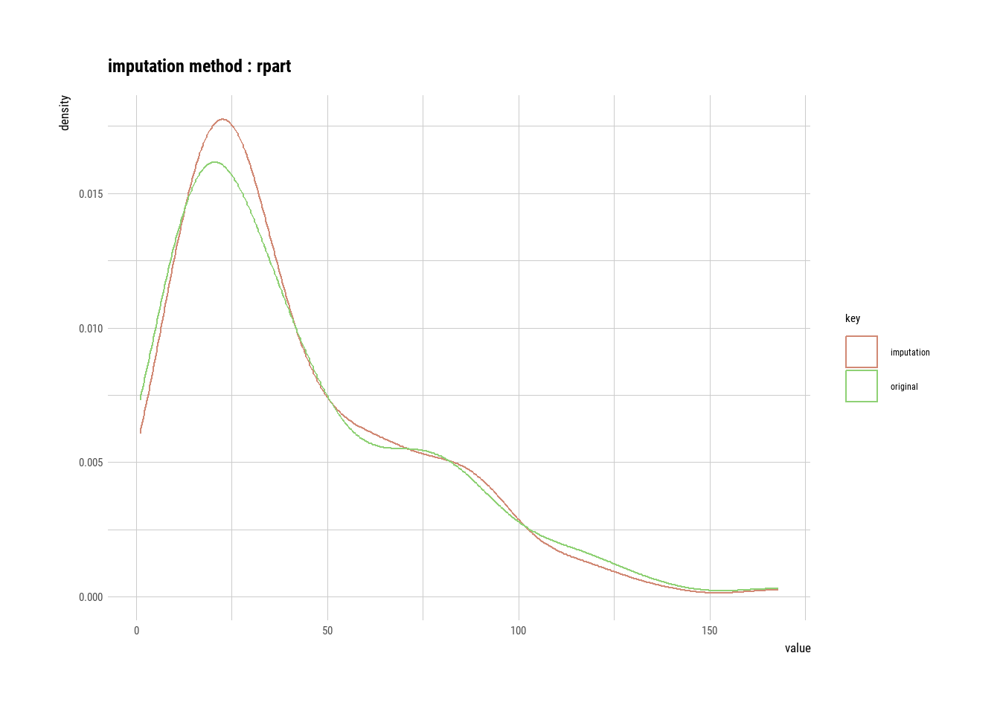
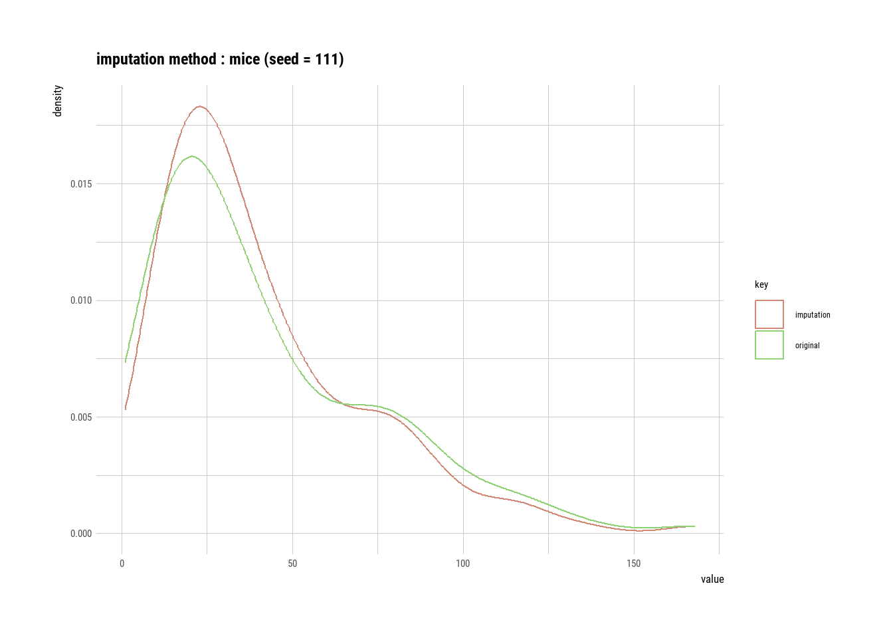

Büyük veri, hacim, hız, çeşitlilik, doğruluk ve değer gibi özellikleriyle öne çıkar. Bu karmaşık veri dünyasında anlamlı bilgiler çıkarma ve analiz süreçlerini yönetme görevi veri bilimine düşmektedir. Ancak, büyük veri analizi sürecinde en sık karşılaşılan zorluklardan biri eksik verilerdir. Eksik veriler, genellikle yanıt eksiklikleri veya veri kaybı gibi nedenlerle ortaya çıkar ve bu durum, analiz sonuçlarının doğruluğunu ve güvenilirliğini tehlikeye atar. Eksik veri problemi, istatistiksel gücün azalması, parametre tahminlerinde yanlılık, örneklemlerin temsil gücünün zayıflaması ve analiz süreçlerinin karmaşıklaşması gibi sorunlara yol açabilir. Bu nedenle, eksik verilerle doğru bir şekilde başa çıkmak, sağlam ve güvenilir analiz sonuçları elde etmek için kritik öneme sahiptir.
Eksik veri yönetimi, veri analizi sürecinin temel yapı taşlarından biri olarak değerlendirilmelidir. Bu bağlamda, eksik verilerin tespiti ve görselleştirilmesi için naniar paketi kullanılabilir; özellikle vis_miss() fonksiyonu, eksik veri desenlerini analiz etmek için etkili bir araçtır. Eksik verileri doldurma yöntemleri arasında, özellikle çok değişkenli veri setleri için uygun olan mice paketi dikkat çeker. Bu paket, birden fazla doldurma yöntemi sunarak, veri setinin istatistiksel gücünü ve temsiliyetini artırır. Ayrıca, eksik veri profillerini detaylı bir şekilde analiz etmek ve raporlamak için dlookr paketi gibi araçlardan yararlanmak mümkündür. Eksik veri yönetiminde kullanılan bu yaklaşımlar, veri analistlerinin daha doğru öngörüler yapmasını sağlayarak, stratejik karar alma süreçlerine destek olur. Böylece, eksik veri probleminin üstesinden gelmek için yöntem seçimi ve uygulaması, veri analizinde güvenilirlik ve doğruluk açısından vazgeçilmez bir süreçtir.
Veri Seti airquality
# Gerekli kütüphanelerin yüklenmesilibrary(dplyr)# datasets paketini yükleme (otomatik olarak yüklü olmalı)library(datasets)# airquality veri setinin görüntülenmesihead(airquality, 10)
airquality veri seti, 1973 yılında New York’ta ölçülen hava kalitesi değerlerini içeren bir veri setidir. Bu veri seti, hava kalitesini etkileyen çeşitli değişkenleri içerir ve çevresel analizler için kullanılır. Veri seti, aşağıdaki değişkenlerden oluşur:
Ozone: Ozon seviyelerini ifade eder (ppb - parts per billion).
Solar.R: Solar radyasyon değerlerini içerir (langley).
Wind: Rüzgar hızını içerir (mph - miles per hour).
Temp: Günlük maksimum sıcaklık ölçümlerini içerir (Fahrenheit).
Month: Ölçümün yapıldığı ayı temsil eder (1-12 arasında).
Day: Ölçümün yapıldığı gün bilgisini içerir (1-31 arasında).
6.1.1 Ad-hoc Yöntemler - Liste Bazlı Silme (Listwise Deletion)
Eksik verilerle başa çıkmak için veri bilimciler tarafından en sık kullanılan yöntemlerden biri, eksik değerlere sahip durumları tamamen çıkarmak ve yalnızca kalan veri setini analiz etmektir. Bu yönteme liste bazlı silme veya tam durum analizi (complete-case analysis) denir. R programında na.omit() fonksiyonu, veri setinde bir veya daha fazla eksik değeri olan tüm durumları kaldırır.
İlk çıktıda airquality, eksik değerler (NA) hala veri setinde bulunurken, airquality_omit veri setinde eksik değerler içeren satırlar tamamen çıkarılmıştır. Bu, satır sayısının azalmasına yol açar.
Liste bazlı silme
Liste bazlı silme (Listwise deletion) yöntemi, eksik veriler içeren satırları tamamen kaldırdığı için genellikle birkaç nedenden dolayı tercih edilmez:
Veri Kaybı: Eksik değerlere sahip satırların tamamen silinmesi, veri setinin boyutunu küçültür ve bu da analiz için kullanılabilir bilgi miktarını azaltır. Bu durum, özellikle eksik verilerin oranı yüksekse, analiz sonuçlarını ciddi şekilde etkileyebilir.
Örnekleme Yanlılığı: Eksik veriler rastgele (MCAR - Missing Completely at Random) değilse, bu yöntemin kullanımı örneklemde yanlılığa neden olabilir. Sonuç olarak, elde edilen analiz sonuçları tüm veri setini veya popülasyonu doğru bir şekilde temsil etmeyebilir.
İstatistiksel Güç Kaybı: Veri setinin boyutunun küçülmesi, istatistiksel gücü azaltır. Bu da yapılan analizlerin daha az anlamlı sonuçlar üretmesine yol açabilir.
Karmaşık Eksiklik Yapıları: Eksik veriler farklı desenler izleyebilir ve listwise deletion, bu desenleri dikkate almadan tüm eksik satırları kaldırır. Bu, özellikle eksik verilerin analizin anahtar değişkenlerinde olduğu durumlarda önemli bilgilerin kaybolmasına neden olabilir.
Bu nedenlerle, eksik verilerle başa çıkmak için çoklu doldurma (multiple imputation) veya eksik değerlerin modelleme yöntemleriyle ele alınması gibi daha gelişmiş yöntemler genellikle listwise deletion’a tercih edilir.
Grafik, vis_miss() fonksiyonu ile oluşturulmuş ve airquality veri setindeki eksik verilerin genel yapısını göstermektedir.
Siyah alanlar eksik verileri (Missing) temsil ederken, gri alanlar mevcut verileri (Present) temsil eder.
Ozon değişkeninde %24, Solar.R değişkeninde %5 oranında eksik veri bulunmaktadır. Diğer değişkenler (Wind, Temp, Month, Day) ise eksiksizdir.
6.1.2.1 Eksik Değerlerin Eşzamanlı Görülmesi
# naniar kütüphanesini yüklemelibrary(naniar)# Eksik verilerin UpSet grafiği ile gösterimigg_miss_upset(airquality)

gg_miss_upset(airquality) fonksiyonu, naniar paketine ait bir fonksiyondur ve eksik değerlerin birlikteliğini (co-occurrence) görselleştirmek için UpSetR paketini kullanarak bir grafik oluşturur. Bu grafik, hangi değişkenlerin birlikte eksik olduğunu ve bu kombinasyonların ne sıklıkta görüldüğünü gösterir.
Çubuk grafikler (dikey): Her bir çubuk, belirli bir eksik değer kombinasyonunu temsil eder. Çubuğun yüksekliği, bu kombinasyonun veri setinde kaç kez tekrarlandığını gösterir.
Noktalar ve çizgiler (yatay): Her bir değişken için bir nokta bulunur. Eğer bir çubukta o değişkenle ilgili nokta doluysa (yani çizgiyle bağlıysa), o kombinasyonda o değişkende eksik değer olduğu anlamına gelir. Örneğin, sadece “Ozone” değişkenine bağlı bir çubuk, sadece “Ozone” değerinin eksik olduğu satırları temsil eder. Hem “Ozone” hem de “Solar.R” değişkenlerine bağlı bir çubuk ise, her iki değişkende de aynı anda eksik değer olan satırları temsil eder.
6.1.2.2 Faktör Düzeyine Göre Veri Eksikliğini Görselleştirme
gg_miss_fct(x = airquality, fct = Month) fonksiyonu, naniar paketine ait bir fonksiyondur ve airquality veri setindeki eksik verilerin Month değişkenine göre dağılımını görselleştirir. Month burada bir faktör (kategorik değişken) olarak kabul edilir ve her bir ay (5, 6, 7, 8, 9) için ayrı bir çubuk gösterilir.
Grafikte şunlar görülebilir:
X ekseni (Month): Ayları temsil eder (5 = Mayıs, 6 = Haziran, …, 9 = Eylül).
Y ekseni (Missing Percentage): Eksik veri yüzdesini temsil eder.
Çubuklar: Her bir ay için bir çubuk bulunur. Çubuğun yüksekliği, o ayda ne kadar eksik veri olduğunu (tüm değişkenler için toplamda) gösterir.
Bu grafik, eksik verilerin aylara göre nasıl değiştiğini anlamak için çok faydalıdır. Örneğin, belirli aylarda daha fazla eksik veri olup olmadığını veya eksik verilerin aylara göre bir örüntü izleyip izlemediğini görebilirsiniz. Bu bilgi, veri toplama sürecindeki olası sorunları veya mevsimsel etkileri anlamanıza yardımcı olabilir. Örneğin, eğer belirli bir ayda ölçüm cihazlarında bir arıza olduysa, o ayda daha fazla eksik veri görülebilir.
Eksik Verileri Faktör Düzeyine Göre Nokta Grafiği ile Görselleştirme
# Gerekli paketlerin yüklenmesilibrary(ggplot2)library(naniar)# Eksik veri noktalarını görselleştirmeggplot(airquality, aes(x =Ozone, y =Solar.R))+geom_miss_point()# Eksik verileri noktalar olarak görselleştirir

6.1.2.3dlookr Paketi ile Eksik Veriler
# dlookr kütüphanesini yükleme (gerekli fonksiyon için)# install.packages("dlookr")library(dlookr)# Eksik verilerin Pareto grafiği ile gösterimiplot_na_pareto(airquality, col ="blue")

plot_na_pareto(airquality) fonksiyonu, dlookr paketine ait bir fonksiyondur ve airquality veri setindeki eksik değerleri bir Pareto grafiği ile görselleştirir.
X ekseni: Değişkenleri temsil eder. Değişkenler, eksik değer sayılarına göre en çoktan en aza doğru sıralanmıştır.
Sol Y ekseni: Eksik değer sayısını temsil eder. Her bir değişken için bir çubuk bulunur ve çubuğun yüksekliği o değişkendeki eksik değer sayısını gösterir.
Sağ Y ekseni: Kümülatif eksiklik yüzdesini temsil eder. Çizgi grafiği, değişkenler eklendikçe toplam eksiklik oranının nasıl arttığını gösterir.
Pareto grafiği, hangi değişkenlerde en çok eksik değer olduğunu ve bu değişkenlerin toplam eksikliğe ne kadar katkıda bulunduğunu hızlıca anlamak için kullanışlıdır. Genellikle, birkaç değişkenin toplam eksikliğin büyük bir kısmını oluşturduğu görülür (“80/20 kuralı” olarak da bilinir). Bu grafik, eksik verilerle başa çıkarken önceliklerin belirlenmesine yardımcı olabilir. Örneğin, en çok eksik değere sahip değişkenlere odaklanmak, genel eksiklik sorununu çözmek için daha etkili bir yaklaşım olabilir. airquality örneğinde Ozone değişkeninin diğerlerine göre çok daha fazla eksik veriye sahip olduğu kolayca görülebilir.
Eksik Verilerin Hiyerarşik Kümeleme Grafiği ile Gösterimi dlookr
# dlookr kütüphanesini yüklemelibrary(dlookr)# Eksik verilerin hiyerarşik kümeleme grafiği ile gösterimiplot_na_hclust(airquality, main ="Distribution of missing value")

plot_na_hclust(airquality, main = "Distribution of missing value") fonksiyonu, dlookr paketine ait bir fonksiyondur ve airquality veri setindeki eksik değer örüntülerini hiyerarşik kümeleme (hierarchical clustering) kullanarak görselleştirir.
main = "Distribution of missing value" argümanı, grafiğe bir başlık ekler.
Bu grafik, eksik değerlerin veri setinde rastgele mi dağıldığını yoksa belirli örüntüler izleyip izlemediğini anlamak için çok faydalıdır. Örneğin, belirli satır gruplarının benzer eksik değer örüntülerine sahip olduğunu görmek, veri toplama sürecinde veya verilerin doğasında bir sorun olduğunu gösterebilir. Bu bilgi, eksik verilerle nasıl başa çıkılacağına (örneğin, hangi doldurma yönteminin kullanılacağına) karar verirken önemli bir rol oynayabilir.
Eksik Verilerin Kesişim Grafiği ile Gösterimi dlookr
# dlookr kütüphanesini yüklemelibrary(dlookr)# Eksik verilerin kesişim grafiği ile gösterimiplot_na_intersect(airquality)

plot_na_intersect(airquality) fonksiyonu, dlookr paketine ait bir fonksiyondur ve airquality veri setindeki eksik değerlerin kesişimlerini (yani hangi değişkenlerin aynı satırlarda birlikte eksik olduğunu) görselleştirir.
6.1.3 Eksik Değerlerin Toplam Sayıları ve Oranları
n_miss fonksiyonu, verilerdeki tüm NA (yani eksik) değerlerinin toplam sayısını döndürür.
6.1.3.1NA olan değerlerin sayısı için:
# naniar kütüphanesini yüklemelibrary(naniar)# Eksik değer sayısını hesaplaman_miss(airquality)
[1] 44
n_miss(airquality) fonksiyonu, naniar paketine ait bir fonksiyondur ve airquality veri setindeki toplam eksik değer (NA) sayısını hesaplar. Çıktı olarak [1] 44 değeri döner. Bu, airquality veri setinde toplam 44 adet eksik değer olduğunu gösterir.
6.1.3.2NA olmayan (complete) değerlerin sayısı için:
# naniar kütüphanesini yüklemelibrary(naniar)# Tamamlanmış değer sayısını hesaplaman_complete(airquality)
[1] 874
n_complete(airquality) fonksiyonu, naniar paketine ait bir fonksiyondur ve airquality veri setindeki tamamlanmış (yani eksik olmayan) toplam değer sayısını hesaplar. Çıktı olarak [1] 874 değeri döner. Bu, airquality veri setinde toplam 874 adet tamamlanmış değer olduğunu gösterir.
6.1.3.3NA olan değerlerin oranı için:
# naniar kütüphanesini yüklemelibrary(naniar)# Eksik değer oranını hesaplamaprop_miss(airquality)
[1] 0.04793028
prop_miss(airquality) fonksiyonunun çıktısı olan [1] 0.04792626, airquality veri setindeki verilerin yaklaşık %4.79’unun eksik olduğunu gösterir. Bu oran, eksik değer sayısının toplam veri noktası sayısına bölünmesiyle bulunur.
6.1.3.4NA olmayan (complete) değerlerin oranı için:
# naniar kütüphanesini yüklemelibrary(naniar)# Tamamlanmış değer oranını hesaplamaprop_complete(airquality)
[1] 0.9520697
prop_complete(airquality) fonksiyonu, naniar paketine ait bir fonksiyondur ve airquality veri setindeki tamamlanmış (yani eksik olmayan) değerlerin oranını hesaplar. Çıktı olarak [1] 0.9520737 değeri döner. Bu, airquality veri setindeki değerlerin yaklaşık %95.2’sinin tamamlanmış olduğunu gösterir.
6.1.3.5 Eksik veriler için pareto tablosu dlookr
# dlookr kütüphanesini yükleme (gerekli fonksiyon için)# install.packages("dlookr")library(dlookr)# Eksik verilerin Pareto grafiği ile gösterimiplot_na_pareto(airquality, only_na =TRUE, # sadece eksik değer içeren değişkenlerin gösterilmesini sağlar. plot =FALSE)
# A tibble: 2 × 5
variable frequencies ratio grade cumulative
<fct> <int> <dbl> <fct> <dbl>
1 Ozone 37 0.242 Bad 84.1
2 Solar.R 7 0.0458 Good 100
# grafik yerine sadece tablo çıktısının gösterilmesini sağlar.
diagnose_web_report(airquality, subtitle = "airquality") fonksiyonu, dlookr paketine ait bir fonksiyondur ve airquality veri seti için kapsamlı bir veri teşhis raporu oluşturur. Bu rapor bir HTML dosyası olarak kaydedilir ve bir web tarayıcısında görüntülenebilir.
dlookr paketi, veri teşhisi (data diagnosis) ve veri keşfi (data exploration) için tasarlanmış bir R paketidir. Bu paket, veri kalitesini değerlendirmek, veri setini özetlemek, değişkenler arasındaki ilişkileri incelemek ve eksik verilerle başa çıkmak için çeşitli kullanışlı fonksiyonlar içerir. imputate_na() fonksiyonu da bu paketin eksik veri yönetimi araçlarından biridir.
imputate_na() fonksiyonunun temel amacı, bir veri setindeki eksik değerleri (NA) çeşitli yöntemlerle doldurmaktır. Bu fonksiyon, hem sayısal (numeric) hem de kategorik (categorical) değişkenlerdeki eksik değerleri ele alabilir ve farklı doldurma yöntemleri sunar.
"mode": Eksik değerleri değişkenin moduyla (en sık tekrar eden değer) doldurur.
"knn": K-en yakın komşu algoritmasını kullanarak eksik değerleri doldurur. Bu yöntem, eksik değerin bulunduğu satıra en yakın olan K tane gözlemi bulur ve bu gözlemlerin değerlerini kullanarak eksik değeri tahmin eder. Bu yöntem için bir referans değişken belirtmek gereklidir.
"rpart": Özyinelemeli Bölümleme ve Regresyon Ağaçları (Recursive Partitioning and Regression Trees) yöntemini kullanarak eksik değerleri doldurur. Bu yöntem, bir karar ağacı modeli oluşturarak eksik değerleri tahmin eder. Bu yöntem için bir referans değişken belirtmek gereklidir.
"mice": Zincirleme Denklemlerle Çoklu Atama (Multivariate Imputation by Chained Equations) yöntemini kullanarak eksik değerleri doldurur. Bu yöntem, her eksik değişken için bir model oluşturur ve diğer değişkenleri kullanarak eksik değerleri tahmin eder. Bu yöntem için bir referans değişken belirtmek ve bir rastgele sayı başlangıç değeri (random seed) ayarlamak gereklidir.
Kategorik Değişkenler için Doldurma Yöntemleri:
"mode": Eksik değerleri değişkenin moduyla (en sık tekrar eden kategori) doldurur.
"rpart": Özyinelemeli Bölümleme ve Regresyon Ağaçları yöntemini kullanarak eksik değerleri doldurur. Bu yöntem için bir referans değişken belirtmek gereklidir.
"mice": Zincirleme Denklemlerle Çoklu Atama yöntemini kullanarak eksik değerleri doldurur. Bu yöntem için bir referans değişken belirtmek ve bir rastgele sayı başlangıç değeri (random seed) ayarlamak gereklidir.
imputate_na() fonksiyonu, veri ön işleme adımlarında eksik verileri ele almak için kullanışlı bir araçtır. Doldurma yöntemini seçerken, verinizin yapısını ve analizin amacını göz önünde bulundurmanız önemlidir. Örneğin, ortalama ile doldurma, aykırı değerlerden etkilenebilirken, medyan ile doldurma bu etkiyi azaltır. knn, rpart ve mice gibi daha gelişmiş yöntemler ise, değişkenler arasındaki ilişkileri dikkate alarak daha doğru tahminler yapabilir.
6.1.5.1 Eksik değer içeren sütunu görüntüleme
data("airquality")# airquality veri setinin Ozone sütununu görüntülemeairquality$Ozone
[1] 41 36 12 18 NA 28 23 19 8 NA 7 16 11 14 18 14 34 6
[19] 30 11 1 11 4 32 NA NA NA 23 45 115 37 NA NA NA NA NA
[37] NA 29 NA 71 39 NA NA 23 NA NA 21 37 20 12 13 NA NA NA
[55] NA NA NA NA NA NA NA 135 49 32 NA 64 40 77 97 97 85 NA
[73] 10 27 NA 7 48 35 61 79 63 16 NA NA 80 108 20 52 82 50
[91] 64 59 39 9 16 78 35 66 122 89 110 NA NA 44 28 65 NA 22
[109] 59 23 31 44 21 9 NA 45 168 73 NA 76 118 84 85 96 78 73
[127] 91 47 32 20 23 21 24 44 21 28 9 13 46 18 13 24 16 13
[145] 23 36 7 14 30 NA 14 18 20
airquality$Ozone kodu, airquality adlı veri çerçevesinin Ozone adlı sütununu seçer ve bu sütundaki tüm değerleri bir vektör olarak döndürür.
Çıktıda görüldüğü gibi, Ozone sütunu sayısal değerler ve NA (Not Available - Mevcut Değil) değerleri içermektedir. NA değerleri, o gün için ozon ölçümünün yapılamadığını veya kaydedilmediğini gösterir.
Vektör Çıktılarında Köşeli Parantez
Çıktının başında ve sonunda [1], [28], [55] gibi ifadeler bulunur. Bunlar, çıktının hangi indeksinden itibaren yeni bir satıra geçildiğini gösterir. Örneğin, [28] ifadesi, o satırda 28. elemandan itibaren değerlerin listelendiğini belirtir. Bu, çıktının daha okunabilir olmasını sağlar, özellikle de çok uzun vektörler görüntülendiğinde.
6.1.5.2 Eksik değerleri ortalama (mean) ile doldurma
# dlookr kütüphanesini yükleme library(dlookr)# Ozone değişkenini Temp i referans alarak ortalama ile doldurmaaq_imp_ozone_mean<-imputate_na(airquality, Ozone, Temp, method ="mean")# SADECE Ozone sütununu görüntülemeaq_imp_ozone_mean
Eksik değerlerin ortalama ile doldurulması, veri setinin genel dağılımında hafif değişikliklere yol açmıştır. Eksik değerlerin doldurulması, yoğunluk eğrisini daha düzgün hale getirmiştir, ancak bu işlem, verilerin doğal dağılımını biraz değiştirebilir. Özellikle veri çok eksikse, ortalama ile doldurma yöntemi dağılımın şeklini etkileyebilir. Eğer veri setinin doğal varyasyonunu korumak çok önemliyse, alternatif doldurma yöntemleri (örneğin, knn veya regresyon tabanlı yöntemler) düşünülebilir.
6.1.5.4 Medyan (median) ile doldurma öncesi ve sonrası yoğunluk dağılımları
library(dlookr)# Ozone ve Temp değişkenlerini medyan ile doldurmaaq_imp_ozone_median<-imputate_na(airquality, Ozone, Temp, method ="median")# plot() fonksiyonu ile çizim (indekse karşı değer grafiği)plot(aq_imp_ozone_median)

Grafikte, x ekseni vektördeki elemanların sırasını (indeks), y ekseni ise medyan ile doldurulmuş Ozone değerlerini gösterir. Ortalama ile doldurmaya benzer şekilde, grafikte noktaların rastgele yukarı aşağı hareket ettiğini görürsünüz. Ancak, medyan ile doldurmada, ortalama ile doldurmaya kıyasla grafikte daha az yatay çizgi veya düz bölge görürsünüz. Bunun nedeni, medyanın ortalamadan farklı değerlere sahip olabilmesi ve aynı değerin daha az tekrar etmesidir.
Ortalama vs. Medyan ile Eksik Değer Doldurma
Ortalama ile doldurma, dağılımın ortasında bir yığılmaya neden olurken, medyan ile doldurma bu yığılmayı daha az belirgin hale getirir. Çünkü medyan, aykırı değerlerden ortalamaya göre daha az etkilenir. Bu nedenle, verilerinizde aykırı değerler varsa, medyan ile doldurma ortalama ile doldurmaya göre daha iyi bir seçenek olabilir.
6.1.5.5knn ile doldurma öncesi ve sonrası yoğunluk dağılımları
library(dlookr)# Ozone değişkenini knn ile doldurma (Temp'i referans değişken olarak kullanır)aq_imp_ozone_knn<-imputate_na(airquality, Ozone, Temp, method ="knn")# plot() fonksiyonu ile çizim (indekse karşı değer grafiği)plot(aq_imp_ozone_knn)

Yukarıdaki kod, Ozone değişkenindeki eksik değerleri knn(k-Nearest Neighbors - k-En Yakın Komşu) yöntemiyle dolduruyor ve ardından bu doldurulmuş değerleri plot() fonksiyonu ile çiziliyor.
Referans Değişkenin Önemi: knn ile doldurma yaparken, seçilen referans değişkenin (burada Temp) eksik değerlere sahip olmaması veya çok az eksik değere sahip olması önemlidir. Aksi takdirde, modelin doğruluğu düşebilir.
Benzer Gözlemler: knn, eksik değere sahip olan gözleme en benzer k tane gözlemi bulur ve bu gözlemlerin değerlerini kullanarak eksik değeri tahmin eder. Bu nedenle, verideki yerel örüntüleri yakalamada etkilidir.
k Değeri: k parametresi (komşu sayısı) önemlidir. Çok küçük bir k değeri, aşırı uyuma (overfitting) neden olabilirken, çok büyük bir k değeri, yerel örüntüleri kaçırmaya neden olabilir. imputate_na() fonksiyonunda k değeri varsayılan olarak 5’tir, ancak gerekirse değiştirilebilir.
Dağılımın Değişimi: knn ile doldurma, ortalama veya medyan ile doldurmaya göre dağılımı daha az etkiler. Çünkü bu yöntem, eksik değerleri tek bir sabit değerle doldurmak yerine, benzer gözlemlerin değerlerine göre farklı değerlerle doldurur.
6.1.5.6rpart ile doldurma öncesi ve sonrası yoğunluk dağılımları
library(dlookr)# Ozone değişkenini rpart ile doldurma (Temp'i referans değişken olarak kullanır)aq_imp_ozone_rpart<-imputate_na(airquality, Ozone, Temp, method ="rpart")# plot() fonksiyonu ile çizim (indekse karşı değer grafiği)plot(aq_imp_ozone_rpart)

Yukarıdaki kod ile Ozone değişkenindeki eksik değerleri rpart(Recursive Partitioning and Regression Trees - Özyinelemeli Bölümleme ve Regresyon Ağaçları) yöntemiyle dolduruyor ve ardından bu doldurulmuş değerleri plot() fonksiyonu ile çiziyor.
referans Değişkenin Önemi: rpart ile doldurma yaparken, seçilen referans değişkenin (burada Temp) eksik değerlere sahip olmaması veya çok az eksik değere sahip olması önemlidir. Aksi takdirde, modelin doğruluğu düşebilir.
Doğrusal Olmayan İlişkiler: rpart, değişkenler arasındaki doğrusal olmayan ilişkileri de yakalayabildiği için, ortalama veya medyan ile doldurmaya göre daha doğru sonuçlar verebilir. Ancak, aşırı uyum (overfitting) riskini de beraberinde getirebilir.
Dağılımın Değişimi: rpart ile doldurma, ortalama veya medyan ile doldurmaya göre dağılımı daha az etkiler. Çünkü bu yöntem, eksik değerleri tek bir sabit değerle doldurmak yerine, referans değişkene göre farklı değerlerle doldurur.
6.1.5.7mice ile doldurma öncesi ve sonrası yoğunluk dağılımları
library(dlookr)library(mice)# Ozone değişkenini mice ile doldurma (Temp'i ve diğer değişkenleri kullanır)aq_imp_ozone_mice<-imputate_na(airquality, Ozone, Temp, method ="mice", seed =111, print =FALSE)# plot() fonksiyonu ile çizim (indekse karşı değer grafiği)plot(aq_imp_ozone_mice)

Yukarıdaki kod ile Ozone değişkenindeki eksik değerleri mice (Multivariate Imputation by Chained Equations - Zincirleme Denklemlerle Çoklu Atama) yöntemiyle dolduruyor ve ardından bu doldurulmuş değerleri plot() fonksiyonu ile çiziyor.
Çoklu Atama:mice, eksik değerler için birden fazla olası değer ürettiği için, eksik verilerin belirsizliğini daha iyi yansıtır. Bu, daha doğru ve güvenilir sonuçlar elde etmenizi sağlar.
Değişkenler Arası İlişkiler:mice, değişkenler arasındaki ilişkileri dikkate aldığı için, diğer yöntemlere göre daha iyi tahminler yapabilir.
Dağılımın Korunması:mice, verinin orijinal dağılımını daha iyi korur. Ortalama veya medyan ile doldurma, dağılımda bozulmalara neden olabilirken, mice bu etkiyi en aza indirir.
6.1.5.8 Doldurulmuş veriyi orijinal veriye entegre etme - Aşama 1
# Gerekli kütüphanelerin yüklenmesilibrary(dlookr)library(tidyverse)library(mice)# Orijinal veri setini kopyalamaairquality_imp<-airquality# Doldurulmuş Ozone verisini orijinal veri setine atamaairquality_imp$Ozone<-aq_imp_ozone_mice# Doldurulmuş veri setini görüntülemehead(airquality_imp, 10)
6.1.5.9 Doldurulmuş veriyi orijinal veriye entegre etme - Aşama 2
# Gerekli kütüphanelerin yüklenmesilibrary(dlookr)library(mice)library(tidyverse)# Ozone değişkenini ortalama ile doldurmaaq_imp_solar_mice<-imputate_na(airquality_imp, Solar.R, Temp, method ="mice", seed =111, print =FALSE)# "print =" argümanı eğer TRUE olarak ayarlanırsa, mice işlemin geçmişini konsolda# yazdıracaktır. Sessiz bir hesaplama için print=FALSE kullanın.# Doldurulmuş Ozone verisini orijinal veri setine atamaairquality_imp$Solar.R<-aq_imp_solar_mice# Doldurulmuş veri setini görüntülemehead(airquality_imp, 10)
MICE paketi, eksik veri problemini çözmek için kullanılan bir araçtır ve eksik verileri çoklu imputasyon yöntemini kullanarak işleme alır. Süreç, eksik veri içeren bir veri setiyle başlar. Bu veri genellikle bir data frame formatındadır ve eksik verilerin, diğer değişkenlerle olan ilişkilerine dayanarak doldurulması hedeflenir.
MICE paketi, eksik veri problemini çözmek için şu adımları takip eder:
İlk adımda, mice() fonksiyonu kullanılarak eksik veriler birden fazla iterasyonla doldurulur. Her iterasyonda eksik olan değişkenler, diğer değişkenlerle olan ilişkileri kullanılarak tahmin edilir. Bu işlem sonucunda, doldurulmuş veri setlerini içeren bir “mids” nesnesi oluşturulur.
Doldurulan veri setleri üzerinde analizler yapar (with()).
Daha sonra, with() fonksiyonu aracılığıyla doldurulan veri setleri üzerinde istatistiksel analizler gerçekleştirilir. Örneğin, her doldurulmuş veri seti için regresyon analizi gibi istatistiksel işlemler yapılabilir ve bu analizlerin sonuçları “mira” nesnesi olarak saklanır.
Analiz sonuçlarını havuzlar ve birleştirir (pool()).
Son aşamada, pool() fonksiyonu kullanılarak her bir doldurulmuş veri seti üzerinde yapılan analizlerin sonuçları birleştirilir. Bu birleştirme işlemi, eksik veri kaynaklı belirsizliği hesaba katarak daha güvenilir ve tutarlı sonuçlar elde etmeyi sağlar. Bu süreç sonucunda, analizlerin nihai sonuçları “mipo” nesnesi olarak elde edilir.
MICE paketi, eksik veri problemini istatistiksel olarak en iyi şekilde ele alarak analizlerin güvenilirliğini artırmayı hedefler ve eksik veriden kaynaklanan yanlılığı azaltır.
# Gerekli kütüphanelerin yüklenmesi# install.packages("mice")# install.packages("tidyverse")# install.packages("NHANES")library(mice)library(tidyverse)library(NHANES)nhanes3<-NHANES%>%select(Weight, Height, TotChol, PhysActive)# NHANES veri setinin görüntülenmesi (örnek olarak ilk 10 satır)head(nhanes3, 10)
NHANES (Ulusal Sağlık ve Beslenme İnceleme Anketi), ABD’de yetişkinlerin ve çocukların sağlık ve beslenme durumunu ölçen bir CDC araştırmasıdır. Anketler ve fiziksel muayeneler içerir. 76 farklı değişkeni bulunmaktadır. Araştırmamızda özellikle aşağıda yer alan
Çalışmamızda aşağıda yer alan değişkenlere odaklanılacaktır:
Weight (Kilo): Obezite ve aşırı kiloyu değerlendirmek için ölçülür.
Height (Boy): VKİ (Vücut Kitle İndeksi) hesaplamak için kullanılır.
TotChol (Toplam Kolesterol): Kalp hastalığı riskini gösterir.
PhysActive (Fiziksel Aktivite): Genel sağlık için önemlidir.
Bu veriler, halk sağlığı sorunlarını anlamak ve sağlık politikalarını değerlendirmek için kullanılır.
PhysActive 167 16.7:PhysActive değişkeninde 167 eksik veri vardır ve bu, toplam verinin %16.7’sine karşılık gelir.
TotChol 152 15.3:TotChol değişkeninde 152 eksik veri vardır ve bu, toplam verinin %15.3’üne karşılık gelir.
Height 35 3.53:Height değişkeninde 35 eksik veri vardır ve bu, toplam verinin %3.53’üne karşılık gelir.
Weight 7 0.78:Weight değişkeninde 7 eksik veri vardır ve bu, toplam verinin %0.78’ine karşılık gelir.
6.1.6.1 MICE (Çoklu İmputasyon) ile Eksik Veri Doldurma
library(mice)# nhanes veri setinde eksik değerleri doldurma (20 imputasyon seti oluşturma)nhanes_multiimp<-mice(nhanes3, m =20, print =FALSE)
Bu kod, mice paketi kullanılarak nhanes veri setindeki eksik değerlerin doldurulması için çoklu imputasyon işlemi gerçekleştirir. Burada, m = 20 parametresiyle eksik değerlerin 20 farklı tahmini yapılır ve her biri bir imputasyon veri seti olarak oluşturulur.
nhanes: İçerisinde eksik değerler bulunan örnek bir veri seti.
m = 20: Çoklu imputasyon işlemiyle 20 farklı doldurulmuş veri seti oluşturulacağını belirtir.
Yukarıdaki kod, mice paketini kullanarak nhanes veri setindeki eksik değerleri çoklu atama yöntemiyle doldurur. Bu yöntem, eksik verilerin belirsizliğini hesaba katarak daha doğru ve güvenilir analizler yapmanıza olanak tanır. Kodun doğru çalışması için data(nhanes) satırının eklenmesi önemlidir. Ayrıca, seed eklenmesi, sonuçların tekrarlanabilirliğini sağlar. Kod, nhanes_multiimp adında bir mids nesnesi oluşturur.
Çoklu Atama ve mice’ın Avantajları
Çoklu Atama:mice, eksik değerler için tek bir değer yerine birden fazla olası değer ürettiği için, eksik verilerin belirsizliğini daha iyi yansıtır. Bu, standart tek atama yöntemlerine (ortalama, medyan vb.) göre daha doğru ve güvenilir sonuçlar elde etmenizi sağlar. Tek bir değer atamak yerine, olası değerlerin bir dağılımını kullanarak, eksik veriden kaynaklanan belirsizliği modelinize dahil edersiniz.
Değişkenler Arası İlişkiler:mice, atama işlemi sırasında değişkenler arasındaki ilişkileri dikkate alır. Bu, eksik verilerin daha gerçekçi ve tutarlı bir şekilde tahmin edilmesini sağlar. Örneğin, yaş ve VKİ arasındaki ilişkiyi göz önünde bulundurarak, eksik VKİ değerlerini daha doğru bir şekilde tahmin edebilir.
Dağılımın Korunması:mice, verinin orijinal dağılımını daha iyi korur. Ortalama veya medyan ile doldurma gibi basit yöntemler, veri dağılımında bozulmalara neden olabilirken, mice bu etkiyi en aza indirir. Bu, analizlerinizin daha güvenilir ve anlamlı olmasını sağlar.
6.1.6.2 MICE ile Veri Setleri Üzerinde Lineer Regresyon Modeli Kurma
library(mice)# Her bir atanmış veri setine lineer regresyon modeli uygulalm_multiimp<-with(nhanes_multiimp, lm(Weight~Height+TotChol+PhysActive))
Bu kod, daha önce oluşturulan nhanes_multiimp adlı mids (multiple imputation data set) nesnesini kullanarak, her bir tamamlanmış veri setine bir lineer regresyon modeli uygular.
with(nhanes_multiimp, ...): Bu fonksiyon, nhanes_multiimp nesnesindeki her bir tamamlanmış veri seti üzerinde belirtilen ifadeyi uygular. Yani, 20 farklı tamamlanmış veri setin varsa, bu ifade 20 kez çalıştırılır ve her biri için ayrı bir lineer regresyon modeli oluşturulur.
lm(Weight ~ Height + TotChol + PhysActive): Bu, lineer regresyon modelini tanımlar. Weight (Kilo) bağımlı değişken, Height (Boy), TotChol (Toplam Kolesterol) ve PhysActive (Fiziksel Aktivite) ise bağımsız değişkenlerdir. Yani, kilonun boy, toplam kolesterol ve fiziksel aktivite ile nasıl ilişkili olduğunu inceliyoruz.
Faktör Dönüşümü
PhysActive’in Faktöre Dönüştürülmesi: Eğer PhysActive değişkeni sayısal olarak kodlanmış bir kategorik değişken ise (örneğin, 1=Aktif, 2=Pasif ya da yes, no gibi), lineer regresyon modelinde doğru şekilde yorumlanabilmesi için bu değişkeni factor() fonksiyonu ile faktöre dönüştürmek çok önemlidir. Kodu bu duruma göre güncelledim. Eğer PhysActive zaten bir faktör ise bu satıra gerek yoktur.
6.1.6.3 MICE ile Regresyon Sonuçlarını Havuzlama
library(mice)# Çoklu imputasyon veri setleri üzerindeki regresyon sonuçlarını havuzlamalm_pooled<-pool(lm_multiimp)# Havuzlanmış sonuçları özetlemesummary(lm_pooled)
Bu kod, lm_multiimp nesnesindeki çoklu imputasyon veri setleri üzerinde oluşturulan lineer regresyon modellerinin sonuçlarını birleştirir (pool). Havuzlama işlemi, eksik veriler nedeniyle ortaya çıkan belirsizliği hesaba katar ve tüm imputasyon veri setlerinden elde edilen sonuçları birleştirerek daha doğru ve güvenilir tahminler sunar.
Bu model, bağımlı değişken olan Weight (Ağırlık) üzerinde Height (Boy Uzunluğu), TotChol (Toplam Kolesterol) ve PhysActive (Fiziksel Aktivite Durumu) değişkenlerinin etkilerini anlamlı bir şekilde açıklamaktadır. Tüm değişkenlerin p-değerleri oldukça küçüktür ve bu değişkenlerin modelde anlamlı bir etkisi olduğunu göstermektedir. Modeldeki katsayılar, bağımlı değişken üzerinde her bir bağımsız değişkenin etkisini istatistiksel olarak güçlü bir şekilde temsil etmektedir.
6.1.6.4 MICE ile Tamamlanmış Veri Seti
library(mice)# İlk doldurulmuş veri setini elde etmenhanes3_completed<-complete(nhanes_multiimp)# Doldurulmuş veri setini görüntülemehead(nhanes3_completed)
Weight Height TotChol PhysActive
1 87.4 164.7 3.49 No
2 87.4 164.7 3.49 No
3 87.4 164.7 3.49 No
4 17.0 105.4 3.80 No
5 86.7 168.4 6.70 No
6 29.8 133.1 4.86 Yes